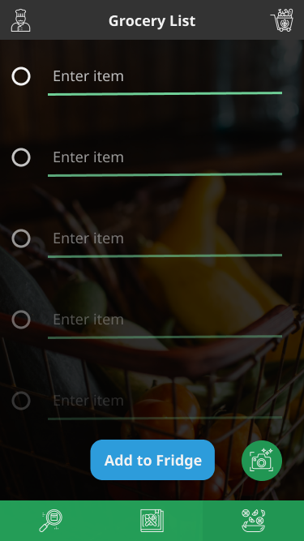
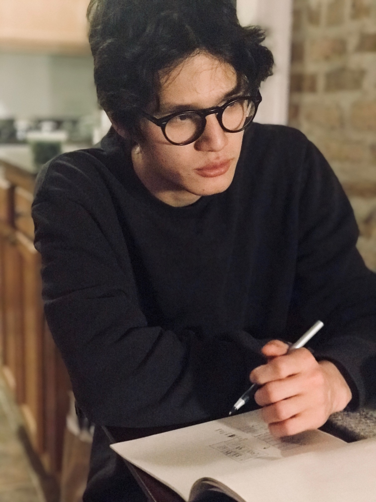

Rumble Hope for the hungry, hopeless college kid
UI/UX Mobile Design • Mockups and Wireframes • User Testing
Introducing Rumble
Rumble is a concept for a mobile app that aims to help college students cook and meal prep. Rumble suggests recipes that are healthy, low-cost and easy-to-prepare based on ingredients the user already owns.
TEAM: Will Fischer, Leslie Zhang, Matt Zients
Play with this project on Figma or POP.
What I Did
User Testing
|
UI Mockups and Wireframes
|
"Houston, we have a problem!"
Rumble was born out of a problem my teammates and I shared: We were all newbies at living alone and—whether out of sheer laziness, ignorance or a combination of both—we were terrible at cooking for ourselves.
We learned that this wasn't an isolated issue. In fact, 40% of over a hundred Northwestern students surveyed purchased lunch on most days, a habit that effectively has financially precarious students bleeding money.
86% of total respondents said an app that helped with cooking and meal prep would pique their interest.
We created Rumble with busy college students in mind. That means tasty, healthy recipes that use what's in the fridge to create many packable servings for under $10, in under 40 minutes, without any fancy kitchen tools.
Key Features
To determine the primary function of Rumble, we surveyed over a hundred students in under 24 hours and asked them to rate differents features on a scale from 1 (least desired) to 5 (highly desired).
Smart Fridge Inventory
 |  |  |
People already make grocery shopping lists on their phone. Rumble takes it to the next step, allowing users to create a list within the app that automatically adds purchased items to their inventory (ideally, users can also snap a picture of their receipt to add items).
Users can see at a glance what's in their fridge. Rumble also logs the input date of fresh ingredients and sends reminders and recipes to users a few days before they start to expire in order to minimize food waste.
Personalization
 |  |  |
Regardless of whether the user is a strict vegan or a hedonistic carnivore, a bumbling kitchen novice or a home chef giving Gordon Ramsay a run for his money, Rumble pleases everyone.
By dictating their cooking skill level, users see recipes that are appropriate for both their technical capabilities and their kitchen inventory. For example, Rumble wouldn't suggest a recipe that requires a meat tenderizer, a blender and fifteen rare spices to someone who self-identifies as a mediocre cook.
Users can filter recipes based on allergies, dietary restrictions, budget and cook time.
Designed by the User
|  |
It was integral for us to have user feedback guide every step of the design process. Much of the interface was conceptualized through interactive one-on-one design sessions with college students. After being briefed of the app's feature or function in question, they sketched out their own imaginings of what the interface would ideally look like. |
Above: A student brainstorms ideas for fridge inventory UI. |
Reflection
Working on Rumble allowed my team to tackle a widespread problem that we were also personally affected by. There are a lot of pre-existing solutions out in the world—the most obvious being meal kit services—that we could study to guide our process.
We had to identify what wasn't working, and try to create a solution that wasn't a rehashing of what's already out there without being so fresh that people wouldn't get on board.
One major learning moment was when we were toying with the idea of making Rumble super social. We were thinking about linking it to social media platforms and allowing friends to swap recipes.
During research, one person we spoke to suffered from an eating disorder and stressed that any social or public aspect of the app would be pretty horrific for her. It made me realize that building that in as a fixture could have created a lot of harm.
I also got to try out Figma for the first time, which was super exciting. I taught myself the ropes as I went and simultaneously had a lot of fun. As a PC user, I don't have access to Sketch. Figma filled that gap for me, and I'm excited to use it more in the future.